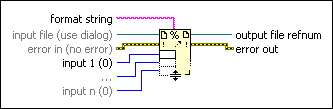

Format Into File Function
Owning Palette: File I/O VIs and Functions
Requires: Base Development System
Formats string, numeric, path, or Boolean data as text and writes the text to a file. If you wire a file refnum to the file input, writing begins at the current file position. To append to an existing file, open the file and set the file position to the end of the file by using the Set File Position function. Otherwise, the function will open the file and write to the beginning of the file. This function does not work for files inside an LLB.

 Add to the block diagram Add to the block diagram |
 Find on the palette Find on the palette |